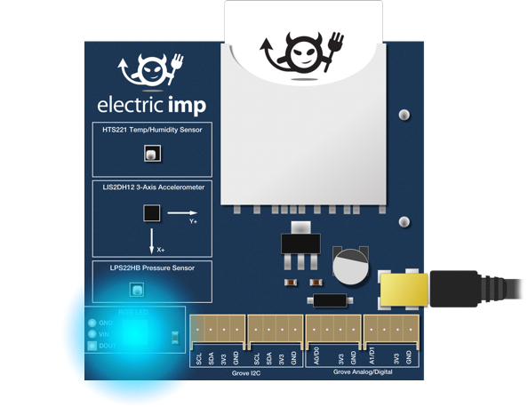

新しい開発デバイスの LED を点灯させ、コアとなるハードウェア動作を見せる、 古典的な ‘Hello, World’ アプリケーション。このセクションではそれをやりたいと思います。お手持ちの Electric Imp impExplorer には WS2812 RGB LED が搭載されていますので、デバイスが “Hello, World!” と存在をアピールするのにそれを使ってみたいと思います。

お持ちの impExplorer に電源を入れてインターネットに接続します。まだ設定がされていない場合はこのセクションにやり方が記載されています。
この Getting Started Guide の前のセクションを終えていれば、IDEがコンピュータ上で表示されているかと思います。もし開いていない場合は ide.electricimp.com に接続して、このガイドの最初のパートで作成したアカウントを使ってサインインしてください。
前のセクションで作成した “Hello World” モデルを開いてください。‘Models’ タブを開き、マウスポインタを ‘Actions’列にもっていきコードのアイコン ( ) をクリックします。IDEのコード編集画面がワークスペース上に表示されます。
) をクリックします。IDEのコード編集画面がワークスペース上に表示されます。
Squirrel（スクワール）と呼ばれる言語を使って、imp対応デバイスをプログラムします。この言語は C やそこから派生した多くの有名な言語、例えば C++, C# や JavaScript に似ています。Squirrelでアプリケーションを記述する方法を学ぶには Squirrel Programming Guide（英語）が手助けになるでしょう。Electric Imp Developer Center には 完全版の Squirrel リファレンス （英語）があります。
すべての Squirrel プログラムには、最低でもいくつかの imp API が必要になります。これらはデバイスや、ボード上のimp、インターネット接続やデバイスに接続されたハードウェアなどをカプセル化するクラス群へのアクセスを提供するものです。
この例では、我々の方でコードを記述しました。単に1行目から26行目までをワークスペースのデバイスコード画面にコピー＆ペーストしてください。前のセクションで記載済みのコードは削除して構いません。
コードを実行するには ‘Run’ ボタンを押してください。この操作で IDE はコードの文法をチェックして、現在のモデルに属する全てのデバイスが受け取れるようにコードをパッケージ化します。そしてデバイスに再起動するように伝えます。imp 対応デバイスがインターネットに接続する都度、インストールすべき新規・更新用アプリケーションコードがないかをチェックします。存在する場合にはすでに持っているコードを置き換え、新しいソフトウェアを実行します。お手元の impExplorer の場合は、いま IDE にペーストしたプログラムが新しいコードになります。
コードを実行する操作によって、基板上の LED が点滅するだけでなく、IDE のログ画面に以下のようなメッセージがあることがお分かりになるでしょうか。
[Status] Device Disconnecting
[Status] Device Booting; 0.73% program storage usedこのコードはとてもシンプルですが、imp対応デバイスがどのように動作するか、いくつか肝となる部分を示しています。2行目は、Electric Impの既製のコードライブラリをどのように呼び出すかを示しています。ここでは impExplorer 上の WS2812 RGB LED のハードウェアドライバがそれになります。ライブラリ群はあなたのコードを拡張するパワフルな手段を提供しますが、これについての詳細は後のセクションで見ていきます。いまのところは、2行目で RGB LED（のドライバ）を意味するライブラリを組み込んでいる、と理解してください。22行目ではクラスをインスタンス化して、このいくつかのメソッドを13行目で呼び出しています。13行目の Set() では赤、緑、青の値を示す3つの数字の配列で色を指定し、draw() でLEDの色を更新しています。
クラス？インスタンス？メソッド？これらの用語に不慣れに感じるのであれば、それはあなたがオブジェクト指向プログラミングに触れていないからかもしれません。前に触れたように Squirrel はオブジェクト指向言語です。オブジェクトとは、データ（『プロパティ』と呼びます）とそのデータで機能する関数（『メソッド』と呼びます）を組み合わせたソフトウェアの構成です。クラスはテンプレートとなるオブジェクトで、主に作業用コピー（『インスタンス』）の作成に使用されます。
最初のオブジェクトは18行目の hardware で、これは imp に接続しているデバイスハードウェアを制御するために使うオブジェクトです。hardware オブジェクトには imp の全てのピンと標準コンポーネントの通信バスに対するプロパティがあります。ここでは通信バスのプロパティの1つで impExplorer に2つあるSPIバスの片方である spiAHSR を使用します。我々は spiAHSR が hardware プロパティの1つであることを知っています。なぜなら、これらは下記のようにピリオドでつながって示されているからです。
hardware.spiAHSRこの文は「hardware オブジェクトの spiAHSR プロパティをください」という意味になり、この関係を示すピリオドの使い方は『ドット構文』と呼ばれます。実は spiAHSR も自身のメソッドとプロパティを持つオブジェクトです。このメソッドの1つは configure() で、19行目で SPI バスのパラメータ群を設定するのに使われています。
configure() という名称の後にあるカッコは、そのメソッドを呼び出す（実行する）ようデバイスに指示します。configure() メソッドは、デバイスに対しどのようにそのバスを使うかを指示する値を持っています。具体的には特定のモード (MSB_FIRST) で、特定の速度 (6000KB per second) といったように。configure() メソッドに渡すことができる全ての値の一覧は imp API ドキュメント（英語）に記載されています。
便宜上、我々は変数 spi を使用して hardware.spiAHSR オブジェクトを参照しました。しかし、19行目で（変数を使わない）完全なオブジェクトとして書くことも出来ました。23行目では「hardware オブジェクトのプロパティである pinH オブジェクトを設定しなさい」と実際にやっています。この行で imp004m の pinH を初期値 High (1) の digital output として設定しています。これにより ExplorerKit の power gating system を稼働させ、RGB LED に電源が行くように設定しています。（訳注：ExplorerKit 日本版の pinHには、センサーやLEDへの電源 On/Off を制御する役割があります。プログラムが必要なときにだけそれらに On することで、省電力を実現しています。）
5行目から7行目では、Squirrel の <- オペレータを紹介しています。これは変数をグローバル変数としつつ、初期値を設定するのに使われています。グローバル変数に対する以後の値の設定には、18行目にあるような = オペレータを使います。 <- オペレータはまた、Squirrel の Key-Valueの対を構成するデータ構造である『テーブル』を生成して値を投入するのにも使われます。なぜこれら2つの状況で同じオペレータを使うのでしょうか？ それは、Squirrel がグローバル変数をシステムテーブルに格納するからです。
ここでは3つのグローバル変数を生成しています。spi, これは hardware.spiAHSR をあとで参照しやすくするため。led, これは WS2812 RGB LED を参照するため。そして state, これは LED が点灯しているかどうかを記録するためです。
14行目もまた重要です。ここでは imp API のメソッド imp.wakeup() を呼び出しています。これはお分かりの通り「imp オブジェクトの wakeup() メソッド」を意味します。このメソッドは imp に対して最初のパラメータで定義された秒数が経過したあとで2つめのパラメータにある関数を実行するよう指示しています。 この例の場合、今実行中の flash() 関数をパラメータとして渡しています。
（カッコなしの）flash は関数への参照ですが、（カッコ付きの）flash() は今すぐにここで実行しなさいという指示となることを思い出してください。 実際26行目でループを開始している際に用いているように。
これがプログラムが imp ベースのデバイスにおいてループを実装する方法になります。他の組込みシステムと異なり、 imp は自身のオペレーティング・システムを持っており、コードが終わりに来たときや一時停止したときに、impOSは impCloud や IDE にコンタクトすることといった重要なシステムタスクを実行する機会を得ることができます。もし下記のような古典的なディレイでのループを使った場合、
local i = 0;
do {
i++
} while (i < 10000);imp の単一実行スレッドを占有（ブロック）してしまい、impOS がループの間ハウスキーピング機能を実行することを妨げてしまいます。これは避けなければなりません。
このタイマーを使ってプログラムを再度アクティブにするやり方は、Electric Imp プラットフォームの イベント駆動プログラミング手法の一例です。コードはイベントによってトリガーが引かれたときにのみ実行されます。もし impOS が作業を完了し、実行が必要なユーザコードがない場合、デバイスは電力を節約するためスピードを落としたり、スリープ状態に入ることさえあります。このイベント駆動の性質については、次のセクションで詳しく説明します。
いま入力したコードはインタラクティブではなく、プログラムの実行中に（外部から）LED を制御する方法はありません。次のセクションでは、インターネットを介して LED の状態を遠隔から変更するコードを実装します。
次のセクション に進むか 最初のセクションに戻る